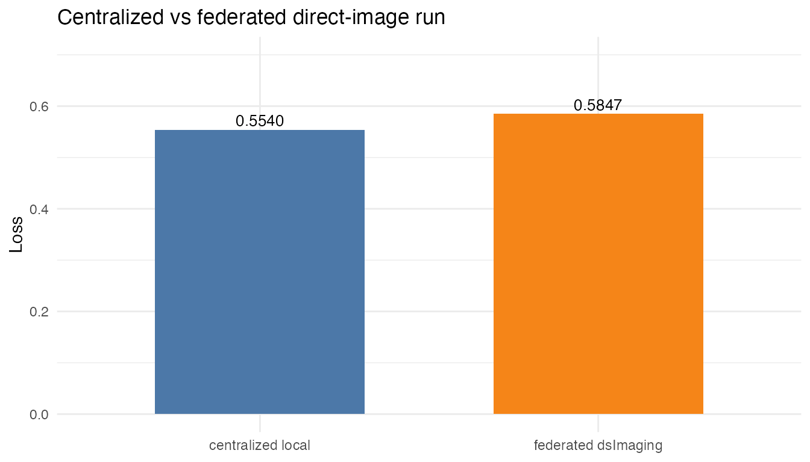

Direct Image ResNet Validation Demo
direct-image-resnet.RmdThis vignette covers a small direct-image validation workflow. Unlike the radiomics and MedMNIST-tabular demos, this one trains a PyTorch vision template from image files stored on the server side. The Opal table contains only sample metadata; image pixels remain in the Rock-side imaging store or bucket.
The demo is intentionally small and uses the
sandbox_open profile by default. Clinical vision profiles
require substantially larger cohorts and Secure Aggregation-capable
Flower runtimes.
Layout
Each Rock sees the same configured image root:
/tmp/dsflower_direct_image_smoke/
site1/
img_001.png
img_002.png
site2/
img_001.png
site3/
img_001.pngEach Opal receives a site-specific metadata table:
id,relative_path,label
site1_img_001,site1/img_001.png,0
site1_img_002,site1/img_002.png,1dsFlower stages the metadata, writes an image manifest,
and the pytorch_resnet18 ClientApp loads the PNG files
inside the Rock.
Run
For the local three-Opal Docker setup:
export DSFLOWER_OPAL_URLS="https://localhost:8443,https://localhost:8444,https://localhost:8445"
export OPAL_USER="administrator"
export OPAL_PASSWORD="admin123"
Rscript inst/demos/direct_image_resnet_smoke.RThe script generates synthetic PNGs, copies each site folder into the
matching Rock container, sets dsflower.image_data_root,
uploads metadata tables, and runs one federated ResNet-18 round.
If the images are already available inside each Rock, skip the Docker copy:
export DSFLOWER_IMAGE_DEMO_SKIP_DOCKER_COPY=true
export DSFLOWER_IMAGE_DEMO_SERVER_ROOT="/path/visible/in/each/rock"
Rscript inst/demos/direct_image_resnet_smoke.R
demo_file <- system.file("demos", "direct_image_resnet_smoke.R",
package = "dsFlowerClient")
if (!nzchar(demo_file)) {
demo_file <- file.path("..", "inst", "demos",
"direct_image_resnet_smoke.R")
}
source(demo_file)API Shape
The core training spec is:
recipe <- ds.flower.recipe(
model = ds.flower.model.pytorch_resnet18(
n_classes = 2L,
batch_size = 4L,
local_epochs = 1L
),
strategy = ds.flower.strategy.fedavg(),
privacy = ds.flower.privacy.sandbox_open(),
target = "label",
num_rounds = 1L
)The current direct-image table path uses the low-level prepare call
so the server receives data_type = "image" and stages an
image manifest:
ds.flower.nodes.prepare(
conns,
symbol = "flower",
target_column = "label",
run_config = c(recipe$model$params, list(data_type = "image")),
privacy = recipe$privacy,
template_name = recipe$model$template
)The higher-level
ds.flower.fit(resource = ..., model = "resnet18") path is
intended for dsImaging resources whose descriptors already
declare source_kind = "image_bundle".
dsImaging Resource Handoff
When images are already published as a dsImaging
resource, use the direct resource demo instead of copying files into
each Rock manually:
export DSFLOWER_OPAL_URLS="https://localhost:8443,https://localhost:8444,https://localhost:8445"
export DSFLOWER_IMAGING_RESOURCE="dsdemo.lung1_study"
export DSFLOWER_IMAGING_TARGET="os_2yr_alive"
Rscript inst/demos/dsimaging_direct_image_resnet.RThat path calls ds.flower.connect(resource = ...), so
the server initializes dsImaging, carries the imaging
descriptor into dsFlower, stages the metadata, resolves
image paths from sample_manifests, and trains directly from
the image assets in the imaging store or bucket.
Set DSFLOWER_IMAGING_LOCAL_WORKDIR to a local copy of
the same demo study to also run a centralized PyTorch baseline over the
same NIfTI images:
export DSFLOWER_IMAGING_LOCAL_WORKDIR="/tmp/dsimaging_lung1_study"
export DSFLOWER_IMAGING_REQUIRE_LOCAL_BASELINE=true
Rscript inst/demos/dsimaging_direct_image_resnet.RThe script writes:
summary.json
run.rds
imaging_metadata.rds
imaging_assets.rds
post_capabilities.rds
local_baseline.json
local_baseline.log
local_vs_federated.jsonLocal vs Federated Validation
The validation run below was executed on 2026-05-11 against three
local Opal/Rock nodes using the dsdemo.lung1_study imaging
resource. Each node held three LUNG1 cases; the centralized baseline
used the same nine NIfTI images from the local dsImaging work directory.
This is a path validation, not a clinical performance claim: the cohort
is deliberately tiny and the evaluation is on the same training
cohort.
validation <- data.frame(
run = c("centralized local", "federated dsImaging"),
engine = c("PyTorch ResNet18", "DataSHIELD + Flower ResNet18"),
samples = c(9L, 9L),
sites_or_clients = c(1L, 3L),
rounds_or_epochs = c(1L, 1L),
loss = c(0.5540125, 0.5847445),
accuracy = c(0.7777778, NA_real_),
failures = c(NA_integer_, 0L)
)
knitr::kable(validation, digits = 4)| run | engine | samples | sites_or_clients | rounds_or_epochs | loss | accuracy | failures |
|---|---|---|---|---|---|---|---|
| centralized local | PyTorch ResNet18 | 9 | 1 | 1 | 0.5540 | 0.7778 | NA |
| federated dsImaging | DataSHIELD + Flower ResNet18 | 9 | 3 | 1 | 0.5847 | NA | 0 |
plot_data <- data.frame(
run = factor(c("centralized local", "federated dsImaging"),
levels = c("centralized local", "federated dsImaging")),
loss = c(0.5540125, 0.5847445)
)
if (has_ggplot2) {
ggplot2::ggplot(plot_data, ggplot2::aes(x = run, y = loss, fill = run)) +
ggplot2::geom_col(width = 0.62, show.legend = FALSE) +
ggplot2::geom_text(ggplot2::aes(label = sprintf("%.4f", loss)),
vjust = -0.35, size = 3.5) +
ggplot2::scale_fill_manual(values = c("#4C78A8", "#F58518")) +
ggplot2::coord_cartesian(ylim = c(0, 0.7)) +
ggplot2::labs(x = NULL, y = "Loss",
title = "Centralized vs federated direct-image run") +
ggplot2::theme_minimal(base_size = 11)
} else {
barplot(plot_data$loss, names.arg = as.character(plot_data$run),
ylim = c(0, 0.7), ylab = "Loss",
main = "Centralized vs federated direct-image run",
col = c("#4C78A8", "#F58518"))
}
The federated run completed one round with three clients, zero client failures, and no active SuperNodes left after cleanup. The resulting comparison file was:
dsflower_output/direct_dsimaging_images/20260511_140204/local_vs_federated.jsonThe key output was:
{
"federated": {
"rounds": 1,
"clients": 3,
"loss": 0.5847444699870216,
"n_failures": 0
},
"centralized": {
"epochs": 1,
"n_samples": 9,
"class_counts": {"0": 7, "1": 2},
"device": "cpu",
"loss": 0.5540124575297037,
"accuracy": 0.7777777777777778
},
"delta": {
"loss_federated_minus_centralized": 0.03073201245731793
}
}